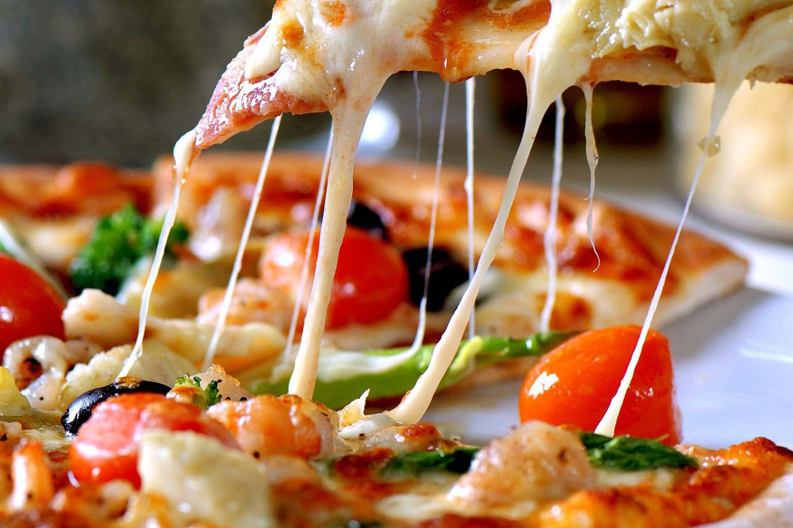

Pizza calabresa
Esta versión, caracterizada por la longaniza y las aceitunas forman una genial combinación

Ingredientes
- 2 cebollas
- 1/2 vaso de salsa de tomate casera (100 ml. aprox.)
- 1/2 berenjena
- 1/2 calabacín
- 1/2 pimiento rojo
- 1 cebolla pequeña (también nos vale una morada, que da mucho color)
- Sal y pimienta negra recién molida (al gusto)
- Una cucharadita (tipo postre) de orégano seco
- 100 g. de queso curado tipo parmesano (o vuestro queso preferido)
- 150 g. de queso mozzarella di bufala
- Un chorrito de aceite de oliva virgen extra
Preparación
- Espolvoreamos con harina la encimera y estiramos la masa con el rodillo de manera que quede lo suficientemente fina para que cuando la horneemos quede crujiente. Añadimos la salsa de tomate frito casero con una cuchara, debemos untar toda la superficie dejando los bordes sin tomate, con un pincel o con la misma cuchara, con movimientos circulares. Espolvoreamos con el orégano picado.
- Metemos la base de pizza al horno sobre la plancha de metal y bajamos la temperatura del horno a 180ºC. Queremos que se fije el tomate y orégano a la base y a la vez conseguir una base crujiente parecida a la de las pizzas profesionales.
- Repartimos los vegetales encima de la base que acabamos de sacar del horno y añadimos los trozos de queso mozzarella repartido por encima de los vegetales para que cuando funda se reparta por todos los huecos de la base. Acabamos rallando por encima el queso parmesano, el contraste de los dos quesos, uno suave y el otro más potente será grandioso.
- Horneamos a 230º C unos 5 minutos encima de la plancha de acero, o hasta que veas que está dorada y la masa crujiente.
- Sacamos del horno y le añadimos un chorrito de aceite de oliva virgen para que esté más jugosa. Si la dejas unos minutos sobre una rejilla, la base no quedará nada húmeda y resultará más crujiente.